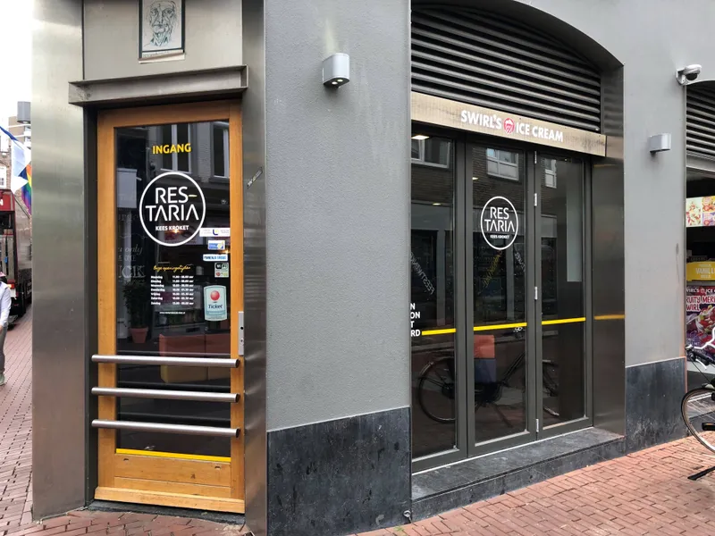

even binnenlopen
Zo vind je ons
Visstraat 12, midden in het centrum van Den Bosch, op de looproute tussen station en Markt.
Adres
Visstraat 12, 5211 DN 's-Hertogenbosch
Bellen of mailen
Openingstijden
- Maandag11:00 - 23:00
- Dinsdag11:00 - 23:00
- Woensdag11:00 - 00:00
- Donderdag11:00 - 01:30
- Vrijdag11:00 - 01:30
- Zaterdag11:00 - 01:30
- Zondag13:00 - 00:00
Het hele jaar door, zeven dagen per week
Goed om te weten
Zitplaatsen binnen en een terras aan de straat. Parkeergelegenheid voor de deur. Grote groepen helpen we snel, ook zonder reservering. Hulphonden zijn welkom.
